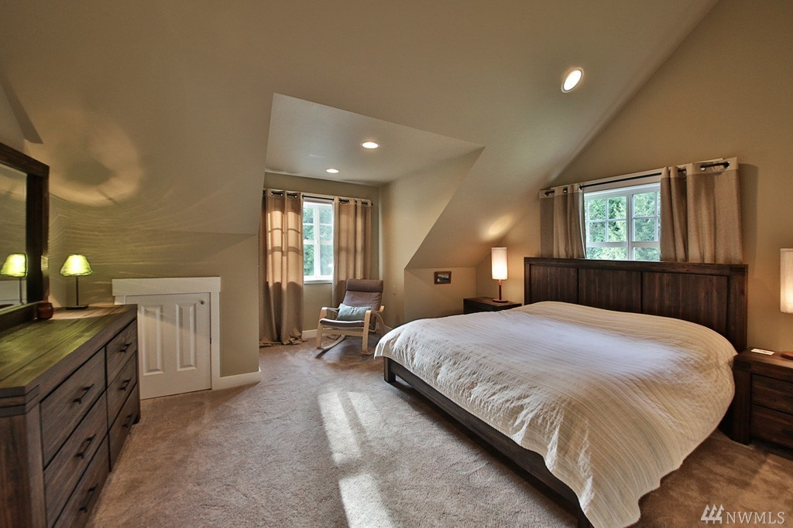

Come down a cedar-lined hidden street that welcomes you to your new home within 2 miles of Langley Village by the Sea. Voted one of the "Happiest Seaside Towns." There is a 5-acre oasis of flowers fruit trees berries and mature plantings organic fenced garden space greenhouse huge covered chicken coop.
House is approximately 3400 sq. ft. with 4 bedrooms & 4 bathrooms. Open concept with wood floors granite counters efficient heating & newer appliances. Organic (Okeo-tex certified) carpet in all bedrooms. Garden space with fruit trees berries and mature plantings. Close proximity to ferry (7 mins. ? easy commute to Seattle) South Whidbey schools sports fields & Langley. Friendly neighbors.
